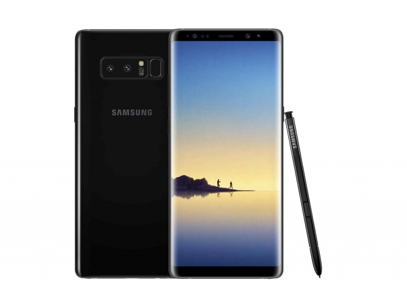

Samsung mobile
Samsung Galaxy Note to seria zaawansowanych smartfonów i tabletów z systemem Android opracowanych i sprzedawanych przez Samsung Electronics. Wszystkie modele Galaxy Note są dostarczane z rysikiem i zawierają wrażliwy na nacisk digitizer Wacom. Wszystkie modele Galaxy Note zawierają również funkcje oprogramowania zorientowane na rysik i duże ekrany urządzeń, takie jak aplikacje do robienia notatek i aplikacje do scrapbookingu oraz wielozadaniowość z podziałem ekranu.
Telefony komórkowe Galaxy Note uznano za pierwsze komercyjne udane przykłady "phabletów" - klasy smartfonów z dużymi ekranami, które mają na celu połączenie funkcjonalności tradycyjnego tabletu z funkcjonalnością telefonu. Samsung sprzedał ponad 50 milionów urządzeń Galaxy Note w okresie od września 2011 r. Do października 2013 r. 10 milionów urządzeń Galaxy Note 3 zostało sprzedanych w ciągu pierwszych 2 miesięcy, 30 milionów było z Note II, a oryginalna Galaxy Note sprzedała około 10 milionów sztuk na całym świecie.

Model z serii Galaxy Note